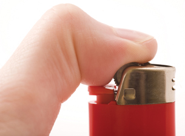

Module 2—Thinking Energy
Lesson 2—Energy Diagrams and Activation Energy
 Get Focused
Get Focused

© Johanna Goodyear/shutterstock
In Lesson 6 of Module 1 you learned how potential energy diagrams can be used to communicate enthalpy changes. It is common knowledge that you have to provide a spark, a flame, or energy in another form to get most fuels to combust.
In Lesson 1 of Module 2 you observed that some of the fuels being tested in the spirit lighters were much easier to ignite than others. Using potential energy diagrams, how can you demonstrate the energy necessary to initiate a combustion and the difference in the magnitude of energy required for some fuels?
In Lesson 2 you will investigate how energy is involved in initiating chemical change. In order to better evaluate biodiesel as a fuel, it is necessary to understand the factors that affect how easily some fuels ignite. Your investigation in this lesson may also provide insight into the scientific reasoning behind the suggested practice of storing fuels in a cool, dark place.
Consider the following question as you complete Lesson 2:
- Why is energy needed to start an exothermic reaction?
 Module 2: Lesson 2 Assignment
Module 2: Lesson 2 Assignment
There is no assignment for this lesson. However, later in this lesson you will continue your work on the Module 2 Assessment as you collect information about the performance of biodiesel compared to traditional diesel fuel.
You must decide what to do with the questions that are not marked by the teacher.
Remember that these questions provide you with the practice and feedback that you need to successfully complete this course. You should respond to all the questions and place those answers in your course folder.